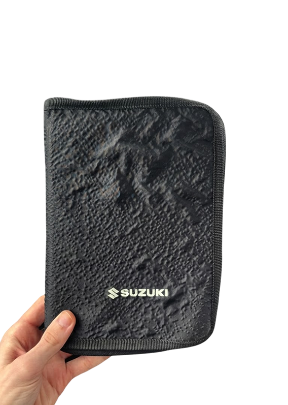

Redefine the way you Drive
Before you modify your Swift Sport, discover the rules that keep your build safe, legal and roadworthy.
Before you modify your Swift Sport, discover the rules that keep your build safe, legal and roadworthy.

01 / INTRODUCTION
Tuning a Suzuki Swift Sport is about making the car your own. From new wheels and suspension to an ECU remap or sports exhaust, each modification changes how the car looks, feels or performs. Not every modification is automatically permitted for road use. Before buying parts, check the requirements that apply to your exact vehicle and the modification you want to make.
02 / KEY REQUIREMENTS
01 / SAFETY
Your Swift must remain safe to drive. Brakes, steering, tyres and suspension must meet applicable requirements. Unsafe fitting can cause APK problems.
02 / SOUND
The exhaust must be securely attached and gas-tight. The registered noise limit and relevant emissions requirements still apply after an exhaust upgrade.
03 / PERFORMANCE
A remap can change power and emissions. Major changes may require approval. Check with RDW before assuming an engine upgrade is road-legal.
04 / APPEARANCE
Modified lights must remain compliant. Check correct colour, placement and operation. Wheels and bodywork must not create unsafe conditions.
03 / YOUR CHECKLIST
04 / QUESTIONS
No. An APK is not a blanket approval for every aftermarket modification.
Only if the car still meets the applicable noise and emissions requirements.
RDW APK handbook — apk-handboek.rdw.nl
RDW vehicle modifications — rdw.nl
Always check the current rules for your vehicle and planned changes. A claim such as "road legal" is not an approval; compare costs in £ or € and check the requirements that apply to your vehicle.
NEXT: INTERIOR